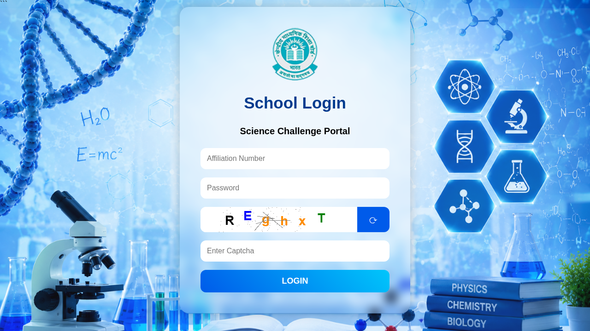

CBSE Science Challenge 2026-27: free for Classes 8-10, schools register by 30 October
CBSE has opened the Science Challenge 2026-27 for students of Classes 8, 9 and 10 in CBSE-affiliated schools. There is no fee for either round. Students do not register themselves: the school registers them on the CBSE portal between 14 and 30 October 2026.
How it works
- Round One (in school): a multiple-choice paper from CBSE, conducted by your school between 2 and 13 November 2026. Maximum time is 60 minutes. It tests speed and accuracy
- Round Two (inter-school, computer based): run by CBSE, tentatively between 30 November and 4 December 2026. The exact date will be notified later
Who takes part
- All students of Classes 8 to 10 in CBSE-affiliated schools can take part in Round One
- For Round Two, a school can send 6 students: the best 2 from each of Classes 8, 9 and 10
- Only schools that finish Round One and register their students for Round Two (17 to 25 November 2026) can go ahead
How students are picked
This is merit based, not a draw. Students who answer the most questions correctly are considered first. If marks tie, the student who finished in less time is preferred.
Dates in the circular
- 14 to 30 October 2026: school registration for Round One
- 2 to 13 November 2026: Round One in school
- 17 to 25 November 2026: school registers 6 students for Round Two
- 30 November to 4 December 2026 (tentative): Round Two, computer based
How to take part: step by step
Registration is school-led: students cannot register themselves. Checked against CBSE Circular Acad-67/2026 and the live portal on 19 October 2026.
If you are a student or parent:
- Tell your science teacher or principal about CBSE Circular Acad-67/2026 (Science Challenge 2026-27).
- Ask the school office to register for Round One before 30 October 2026 - only registered schools can take part.
- Prepare for MCQs based on stimulus material, and practise being quick and accurate.
What the school does (for teachers and principals):
- Open the CBSE Science Challenge portal: cbseacadit.nic.in/sc and tap CLICK TO ENTER.
- On the School Login page, sign in with the school's affiliation number and password (the LOC credentials) and the captcha.
- Between 14 and 30 October 2026, fill in the number of students taking part in Round One.
- Conduct Round One in school between 2 and 13 November 2026 (CBSE sends the MCQ paper; 60 minutes).
- Identify the best 2 students from each of Classes 8, 9 and 10 (6 total) and register them for Round Two on the same portal between 17 and 25 November 2026.
- Round Two is computer-based, run by CBSE, tentatively 30 November to 4 December 2026; the exact date will be notified.

The registration form itself sits inside the school's login, so it is not shown as a screenshot. For questions, the circular lists cbsesciencechallenge@cbseshiksha.in and 011-43354916.
Video guides
We searched YouTube on 19 October 2026 for a step-by-step registration video for this challenge in English and in Malayalam. We could not verify one that matches this 2026-27 cycle, so we are not linking any.
We read CBSE Circular Acad-67/2026 (dated 13 October 2026) and its Annexure on 16 October 2026. We opened the public landing and school login pages on 19 October 2026; we did not log in.
Sources: CBSE Circular Acad-67/2026 (PDF), CBSE Science Challenge portal (school login). Checked 16 October 2026; steps and video search re-checked 19 October 2026. This is an AiCoN explainer, not a government publication.